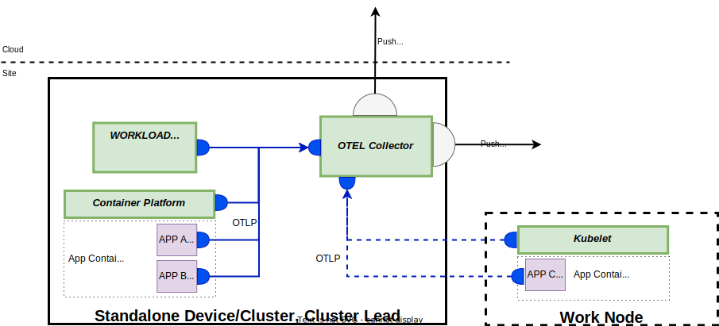
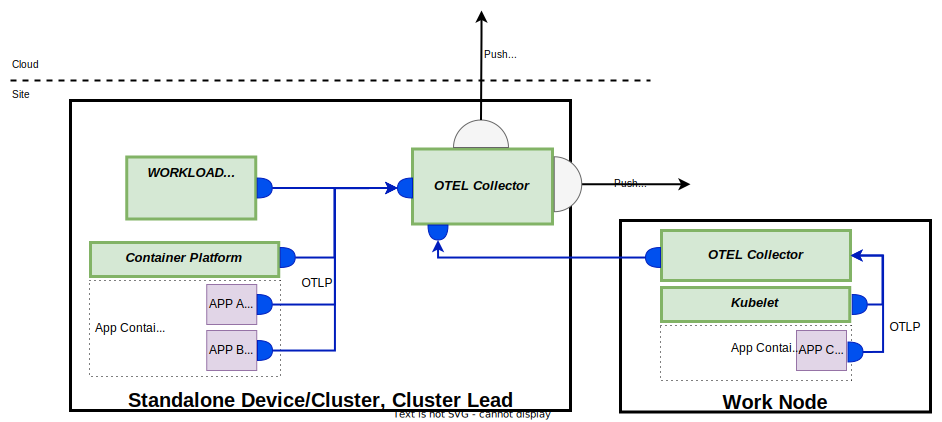

Application Observability
Observability involves the collection and analysis of information produced by a system to monitor its internal behavior.
Observability data is captured using the following signals:
- Metrics - a numerical measurement in time used to observe change over a period of time or configured limits. For example, memory consumption, CPU Usage, available disk space.
- Logs - text outputs produced by a running system/application to provide information about what is happening. For example, outputs to capture security events such as failed login attempts, or unexpected conditions such as errors.
- Traces - contextual data used to follow a request's entire path through a distributed system. For example, trace data can be used to identify bottlenecks, or failure points, within a distributed system.
Margo's application observability scope is limited to the following areas:
- The device's container platform
- The device's workload orchestration agent
- The compliant workloads deployed to the device.
The application observability data is intended to be used for purposes such as:
- Monitoring the container platform's health and current state. This includes aspects such as memory, CPU, and disk usage as well as cluster, node, pod, and container availability, run state, and configured resource limits. This enables end users to make decisions such as whether or not a device can support more applications, or has too many deployed.
- Monitoring the workload orchestration agent and containerized application's state to ensure it is running correctly, performing as expected and not consuming more resource than expected.
- To assist with debugging/diagnostics for applications encountering unexpected conditions impacting their ability to run as expected.
Margo's application observability is NOT intended to be used to monitor anything outside the device such as production processes, machinery, controllers, or sensors and should NOT be used for this purpose.
Observability Framework
Application observability data is made available using OpenTelemetry. OpenTelemetry, a popular open source specification, defines a common way for observability data to be generated and consumed.
There are several reasons why OpenTelemetry was chosen:
- OpenTelemetry is based on a open source specification and not only an implementation
- OpenTelemetry is widely adopted
- OpenTelemetry has a large, and active, open source community
- OpenTelemetry provides SDKs for many popular languages if people wish to use them
- The OpenTelemetry community project has reusable components such as telemetry receivers for Kubernetes, Docker and the host system making integration easier.
- OpenTelemetry is vendor agnostic.
Decision Needed: Need to determine which version(s) of the specification are supported
Open Telemetry Collector Deployment Methods
The device owner MUST deploy, and configure, an OpenTelemetry collector on their device. The device owner MAY choose the deployment model they wish to follow but MUST use one of the following approaches.
For standalone and clustered devices there MUST be at least one OpenTelemetry collector deployed to collect the observability data required below. The Device owner MAY choose to deploy multiple OpenTelemetry collectors with each collector receiving different parts of the observability data required below as long as all required observability data is collected.

For multi-node capable clusters the device owner MAY chose to use the DaemonSet deployment model to ensure there is an OpenTelemetry collector running on each node.

For multi-node capable clusters the device owner MUST ensure the communication between applications, and collector, from one node to a collector on a different node is secure.
The device owner MUST NOT require the use the sidecar deployment model at this time since this requires the pods/containers to have foreknowledge of this deployment model.
Action: Some more research needs to be done here. If there is a way to do this dynamically without requiring the application developer to include special attributes on their pods then it may be allowed.
The device owner MUST NOT pre-configure exporters to send observability data from the device because the end user must control what observability data is exported.
The device owner MUST NOT attempt to inject auto-instrumentation (by using the OpenTelemetry operator for example) into any compliant applications running on the device that are not owned by the device owner.
Container Platform Observability Requirements
In order to allow for monitoring the chosen container platform's state the device owner MUST ensure the following observability data is being collected and made available for export from the OpenTelemetry collector(s) on the standalone device or cluster
Kubernetes
For devices running Kubernetes the following is a minimum list of observability data that MUST be provided. The device owner MAY choose to provide additional observability data if they wish.
- Cluster (both single or multiple node) observability data MUST be collected.
- It is recommended the Device Owner use the Kubernetes Cluster Receiver with the default configuration to collect this information but using this receiver is not required.
- If the Device Owner chooses not to use the Kubernetes Cluster Receiver they MUST provide the same output as the Kubernetes Cluster Receiver's default configuration.
Note: Please see the information below for the default metrics emitted by the Kubernetes Cluster Receiver.
- Cluster events observability data MUST be collected.
- It is recommended the Device Owner use either the Kubernetes Objects Receiver or Kubernetes Events Receiver with the default configuration to collect this information but using either of these receivers is not required.
- If the Device Owner chooses not to use either the Kubernetes Object Receiver or Kubernetes Events Receiver they MUST provide the same output as these Kubernetes Events Receiver's default configuration.
Action: Need to determine which namespaces should be included. All of them, or just the ones the device owner is responsible for creating.
Action: The Kubernetes objects receiver needs to be configured to export events and other resource logs so we'll need to document something additional for this receiver.
- Node, Pod and Container observability data MUST be collected.
- It is recommended the Device Owner use the Kubelet Stats Receiver with the default configuration to collect this information but using this receiver is not required.
- If the Device Owner chooses not to use the Kubelet Stats Receiver they MUST provide the same output as the Kubelet Stats Receiver's default configuration.
Note: Please see the information below for the default metrics emitted by the Kubelet Stats Receiver.
- Metadata identifying the observability data's source MUST be added to the received observability data.
- It is recommend the Device Owner use the Kubernetes Attributes Processor with the default configuration to enhance the observability data with this additional metadata but using this processor is not required.
- If the Device Owner chooses not to use the Kubernetes Attributes Processor they MUST provide the same metadata as the Kubernetes Attributes Processor's default configuration
Note: Please see the information below for the default attributes added by the Kubernetes Attributes Processor.
Standalone Device Container Platforms
For devices running non-clustered container platforms such as Docker or Podman the following is a minimum list of observability data that MUST be provided. The device owner MAY choose to provide additional observability data if they wish.
- Container observability data MUST be collected.
- It is recommended the Device Owner use the Docker Stats Receiver or Podman Stats Receiver with the default configuration to collect this information but using either of these receivers is not required.
- If the Device Owner chooses not to use either receiver they MUST provide the same output as the receiver's default configuration.
Note: Please see the information below for the default metrics emitted by the Docker Stats and Podman Stats Receivers.
General
- The collector MUST receive data using the OLTP format.
- It is recommended the Device Owner use the OLTP Receiver to allow applications to send observability data to the collector.
- If the Device Owner chooses not to use the OLTP Receiver they MUST provide the same functionality as the OLTP receiver.
Action: We will need to determine if there is additional information the device owner needs to include as attributes for each message to ensure the source can be identified. For example, we may require a device device Id attribute.
- Host observability data MUST be collected.
- It is recommended the Device Owner use the Host Metrics Receiver with the default configuration to collect this information but using this receiver is not required.
- If the Device Owner chooses not to use the Host Metrics Receiver they MUST provided the same output as the Host Metrics Receiver's default configuration.
Note: Please see the information below for the default metrics emitted by the Host Metrics Receivers.
Workload Orchestration Agent Observability Requirements
For several reasons, it is recommended the workload orchestration agent be deployed as a containerized application. If it is deployed this way, the application's resource utilization observability data is captured automatically as part of the container platform observability requirements.
If the device owner chooses not to deploy the workload orchestration agent as a containerized application they MUST ensure the following resource usage observability data is available from the OpenTelemetry collector for their agent.
Action: Need to do research to determine if this makes sense, or not, when the agent is not running as a containerized application. We may have to leave it up to what is covered through device observability for this case. If it is possible, and makes sense, we need to define what should be provided.
In addition to the resource utilization data the workload orchestration agent MUST also send the following minimum set of application observability data to the open telemetry collector on the standalone device or cluster. The device owner MAY choose to provided additional observability data if they wish.
Action: We need to understand what the WOS/a is going to be doing to determine what this is.
Compliant Application Observability Requirements
Compliant applications MAY choose to expose application specific observability data by sending their observability data to the Open Telemetry collector on the standalone device or cluster. While this is optional, is it highly recommended in order to support distributed diagnostics.
Application developers choosing to expose application metrics, traces or logs for consumption with OpenTelemetry MUST send the data to the OpenTelemetry collector using OTLP.
Application developers SHOULD NOT expect their applications to be auto-instrumented by anything outside of their control (by the OpenTelemetry operator for example).
An application developer MAY choose an observability framework other than OpenTelemetry but it MUST be self-contained within the deployment of their application. If an alternative approach is taken, it is NOT recommended application developers publish their observability data outside the device/cluster by using any other means other than the Open Telemetry collector. If the application developer chooses to export data without using the OpenTelemetry collector they MUST NOT do this without the end user's approval.
Action: Need to address in some form legacy applications that are not currently using open telemetry and don't want to migrate their application to use it.
Connecting to the OpenTelemetry Collector
In order for an application to publish its observability data to the collector on the standalone device or cluster the device own MUST inject the following environment variables into each container.
| Environment Variable | Description |
|---|---|
| GRPC_OTEL_EXPORTER_OTLP_ENDPOINT | (Optional) The URL for the application to use to connect to the OpenTelemetry collector using gRPC. |
| HTTP_OTEL_EXPORTER_OTLP_ENDPOINT | (Required) The URL for the application to use to connect to the OpenTelemetry collector HTTP + protobuf |
| OTEL_EXPORTER_OTLP_CERTIFICATE | (Optional)The PATH for the client certificate (in PEM format) to use for secure connections to the OpenTelemetry Collector. The application must connect using the certificate if it is provided. |
| OTEL_EXPORTER_OTLP_PROTOCOL | (Optional) "grpc" if the preferred protocol is gRPC, "http/protobuf" if the preferred protocol is HTTP + protobuf. The default is "http/protobuf" if nothing is provided for this environment variable. If the preferred protocol is "grpc" but no gRPC endpoint is provided, or if the application client cannot connect via gRPC, the application client connects using "http/protobuf". |
Action: We need to do some additional research to validate the above and see if any other data is needed for things like establishing a secure connection to the collector.
Exporting Observability Data
End users MUST be able to export observability data from a standalone device or cluster to collectors, or backends, onsite or in the cloud if they wish to make the information available to enable remote monitoring and diagnostics.
Decision Needed: There is a dependency on the decisions about using OpenTelemetry instead of the management API approach. If OpenTelemetry is chosen then there would be some subset of data that MUST be exported to the workload orchestration service vendor.
Future Decision: For MVS1 we have decided the configuration is updated manually. We know this is not ideal because it is error prone and can result in changes being made that should not be made. The current thinking is that the device orchestration agent will be responsible for updating the configuration when the WOS vendor or customer needs to add exports but this is out of scope for MVS1.
OpenTelemetry allows using either a push or pull approach for getting data from a collector. Cloud based workload orchestration or observability platform service vendors should NOT require a pull method for collecting observability data because most end users will not allow devices to be exposed to the internet because of security concerns.
Consuming Observability Data
Workload orchestration or observability platform vendors MAY choose to consume observability data exported from the end user's devices to provide valuable services to the end user.
The end user MAY choose to export observability data from Margo compliant devices to other OpenTelemetry collectors or backends within their environment that is not on the device.
Device owners are NOT required to provide backends for consuming observability data on their devices.
Application Observability Default Telemetry
The following telemetry data is collected by using the default configurations for the receivers indicated above. You can find more information about each piece of telemetry from the receiver's documentation.
Metrics
The following table shows the metrics emitted by the indicated receivers when using the default configuration.
| Metric Group | Metric | Target | Kubernetes Cluster Receiver | Kubelet Stats Receiver | Docker Stats Reciever | Podman Stats Reciever | Host Metrics Reciever |
|---|---|---|---|---|---|---|---|
| CPU | Limit | Container | X | ||||
| CPU | Load Average (15m, 5m, 1m) | System | X | ||||
| CPU | Time | Container, Kubernetes Node, Kubernetes Pod, System | X | X | |||
| CPU | Request | Container | X | ||||
| CPU | Usage Kernel Mode | Container | X | ||||
| CPU | Usage Per CPU | Container | X | ||||
| CPU | Usage System | Container | X | ||||
| CPU | Usage Total | Container | X | X | |||
| CPU | Usage Use Mode | Container | X | ||||
| CPU | Utilization | Container, Kubernetes Node, Kubernetes Pod | X | X | X | ||
| Disk | IO | Container, System | X | X | |||
| Disk | IO Read | Container | X | ||||
| Disk | IO Write | Container | X | ||||
| Disk | IO Time | System | X | ||||
| Disk | IO Time (Weighted) | System | X | ||||
| Disk | Operations | System | X | ||||
| Disk | Operations Pending | System | X | ||||
| Disk | Operation Time | System | X | ||||
| Disk | Total Read/Writes | System | X | ||||
| File System | Available | Container, Kubernetes Node, Kubernetes Pod | X | ||||
| File System | Capacity | Container, Kubernetes Node, Kubernetes Pod | X | ||||
| File System | Inodes | Kubernetes Volume, System | X | X | |||
| File System | Inodes Free | Volume | X | ||||
| File System | Inodes Used | Volume | X | ||||
| File System | Usage | Container, Kubernetes Node, Kubernetes Pod, System | X | X | |||
| Memory | Available | Container, Kubernetes Node, Kubernetes Pod | X | ||||
| Memory | File | Container | X | ||||
| Memory | Limit | Container | X | X | X | ||
| Memory | Major Page Fault | Container, Kubernetes Node, Kubernetes Pod | X | ||||
| Memory | Page Faults | Container, Kubernetes Node, Kubernetes Pod | X | ||||
| Memory | Percent | Container | X | X | |||
| Memory | Request | Container | X | ||||
| Memory | RSS | Container, Kubernetes Node, Kubernetes Pod | X | ||||
| Memory | Total Cache | Container | X | ||||
| Memory | Usage | Container, Kubernetes Node, Kubernetes Pod, System | X | X | X | X | |
| Memory | Working Set | Container, Kubernetes Node, Kubernetes Pod | X | ||||
| Network | Connections | System | X | ||||
| Network | Errors | Kubernetes Node, Kubernetes Pod, System | X | X | |||
| Network | IO | Kubernetes Node, Kubernetes Pod, System | X | X | |||
| Network | IO Bytes Sent | Container | X | X | |||
| Network | IO Bytes Received | Container | X | X | |||
| Network | IO Packets | System | X | ||||
| Network | IO Packets Dropped | System | X | ||||
| Network | IO Packets Dropped (Incoming) | Container | X | ||||
| Network | IO Packets Dropped (Outgoing) | Container | X | ||||
| Paging | Faults | System | X | ||||
| Paging | Operations | System | X | ||||
| Paging | Usage | System | X | ||||
| Process | CPU Time | System | X | ||||
| Process | Disk IO | System | X | ||||
| Process | Memory Usage | System | X | ||||
| Process | Memory Virtual | System | X | ||||
| Processes | Count | System | X | ||||
| Processes | Created | System | X | ||||
| Resource Quota | Hard Limit | Various | X | ||||
| Resource Quota | Used | Various | X | ||||
| State | Ready | Container | X | ||||
| State | Restarts | Container | X | ||||
| State | Active Jobs | Cron Job | X | ||||
| State | Current Scheduled Nodes | Daemonset | X | ||||
| State | Desired Scheduled Nodes | Daemonset | X | ||||
| State | Misscheduled Modes | Daemonset | X | ||||
| State | Ready Nodes | Daemonset | X | ||||
| State | Available | Deployment | X | ||||
| State | Desired | Deployment | X | ||||
| State | Current Replicas | HPA | X | ||||
| State | Desired Replicas | HPA | X | ||||
| State | Max Replicas | HPA | X | ||||
| State | Min Replicas | HPA | X | ||||
| State | Active Pods | Job | X | ||||
| State | Desired Successful Pods | Job | X | ||||
| State | Failed Pods | Job | X | ||||
| State | Max Parallel Jobs | Job | X | ||||
| State | Successful Pods | Job | X | ||||
| State | Phase | Namespace | X | ||||
| State | Phase | Pod | X | ||||
| State | Available | Replicaset | X | ||||
| State | Desired | Replicaset | X | ||||
| State | Available | Replication Controller | X | ||||
| State | Desired | Replication Controller | X | ||||
| State | Current Pods | Stateful Set | X | ||||
| State | Desired Pods | Stateful Set | X | ||||
| State | Ready Pods | Stateful Set | X | ||||
| State | Updated Pods | Stateful Set | X | ||||
| Storage | Available | Volume | X | ||||
| Storage | Capacity | Volume | X | ||||
| Storage | Limit | Container | X | ||||
| Storage (Ephemeral) | Limit | Container | X | ||||
| Storage | Requests | Container | X | ||||
| Storage (Ephemeral) | Request | Container | X |
Logs
The Kubernetes Events receiver collects the event logs when using the default configuration. The Kubernetes Object Receiver must be configured to collect the desired logs. Container logs must be emitted using OTLP.
Kubernetes Attributes Processor
The following shows the attributes added to each signal when using the Kubernetes Attribute Processors' default configuration.
- k8s.namespace.name
- k8s.pod.name
- k8s.pod.uid
- k8s.pod.start_time
- k8s.deployment.name
- k8s.node.name